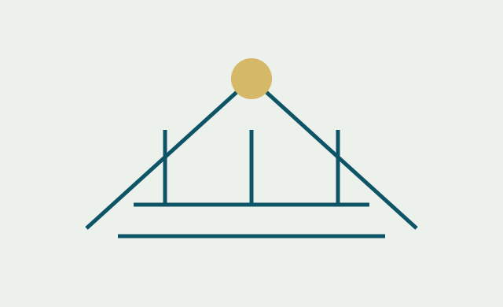

Holding familiale en Équateur : quand et comment la structurer
Critères pour organiser le contrôle du groupe, séparer les activités et préparer la succession.
Leer artículo →Des ressources pour mieux décider
Publicaciones sobre derecho corporativo, empresas extranjeras y protección de datos.
Critères pour organiser le contrôle du groupe, séparer les activités et préparer la succession.
Leer artículo →Aspects sociétaires, comptables, sociaux et de conformité pour planifier l’activité.
Leer artículo →Critères de désignation obligatoire et questions pour examiner la situation de votre organisation.
Leer artículo →